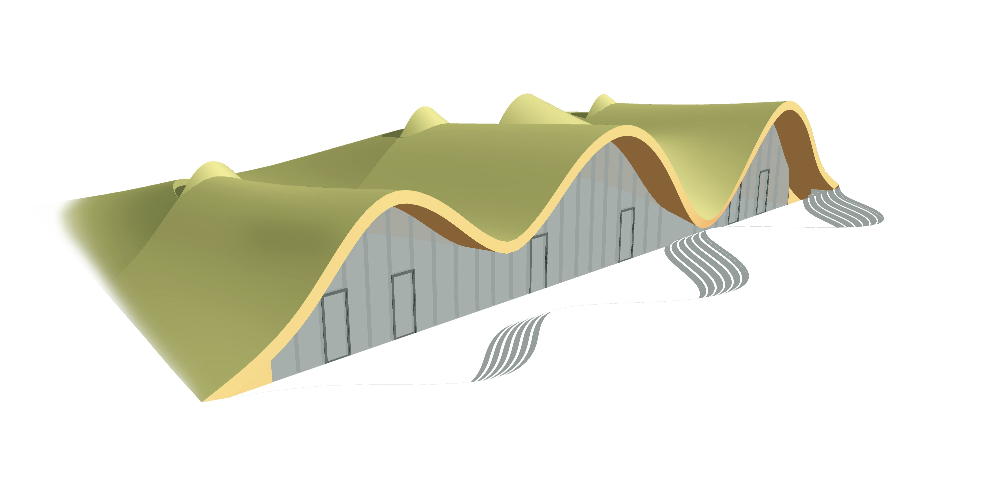

Kakhetian Marani
Winery concept
Marani [ მარანი ] - a traditional Georgian facility for winemaking, which can be located either in the basement of a residential building or in a standalone structure. Wine here matures in special clay vessels buried in the ground, called kvevri [ ქვევრი ]
The design of the marani is tailored for the territory of a hotel complex in the Georgian region of Kakheti, renowned for its wineries, diverse grape varieties, and favorable climate
The concept of the marani is aimed at fostering a close connection with nature. The project pays attention to ensuring that the cellar roof blends harmoniously with the surrounding environment

The interior of the marani is crafted based on established Georgian traditions, overlaying smooth vaulted volumes of the building. Visualizations are created using neural networks